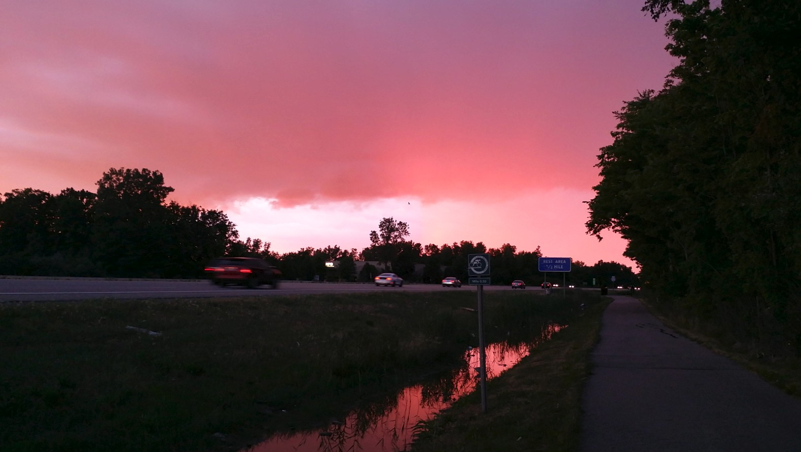
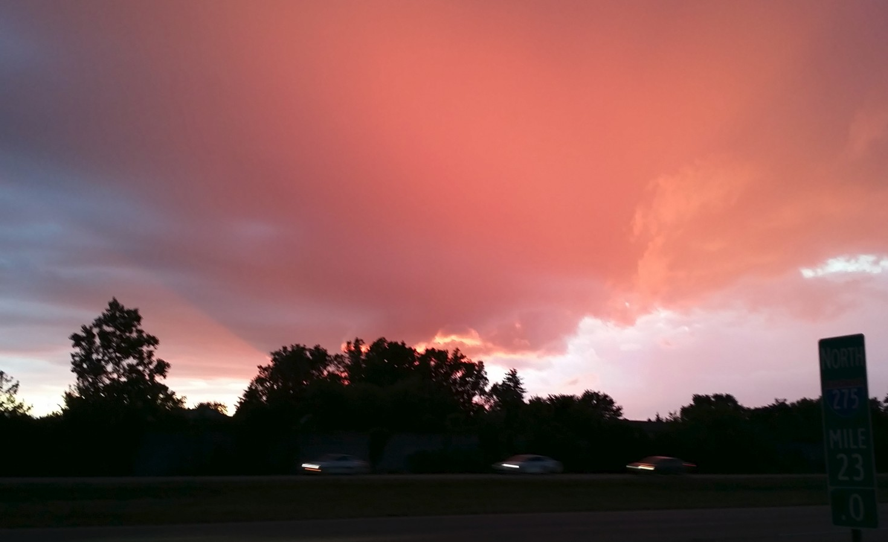

July 28th 2020, 11:55:55 pm EDT

Listen
Sometimes I race my bicycle in the twilight,
it is not too dark - there is still plenty of light.
And to be safe, I bring my flashing lamp,
and ride carefully like a real champ.
But, oh boy, oh boy, is it nice,
there are deer, bunnies, and little mice.
Oh, how smell of pine trees mix with smoke from the fireplace,
it smells do good that I want to stop my race.
Sometimes, I do stop to look at the sun go down,
but... I have to imagine the horizon as I am in middle of a town.
And hen the sun gets low enough all the clouds light up red,
finally allowing the darkness to begin to spread.
That's usually when I turn around,
but I love the frogs and crickets and the early night sound.
I wish I could capture it and keep it all,
but all the pictures and videos I take look dull.
I think we should all take time to enjoy these simple treasures,
as these are some of the life's most magnificent pleasures.

July 27th 2020, 11:25:02 pm EDT

Listen
Life is always about learning and knowing,
all those winds of change freely blowing.
But there is something you must always remember,
that you are a Raging Fire not a glowing ember.
It is your right to strive and thrive and grow,
may you melt all the sleeping-and-cold snow.
Let there fill new oceans, let the rivers flow,
and may the sun shine forever with your beautiful glow.
We each should live our lives with a huge thunder,
because no matter the tests life is always a wonder.
But the best things come from us beating life's test,
by rising up, becoming wise, and doing our best.
No challenge is ever as easy as it looks,
it all requires reading plenty of books.
I don't think anybody is ever truly blessed,
I think life may push us all to feel stressed.
But we are each so special and so strong, and so sweet,
that we can all take on the challenge, and handle the heat.
All the things we hold tight to the breast,
always come from some hard challenge or quest.
It is all about learning and taking that harder route,
so that each day we grow-more in wisdom and less in doubt.
So please, always strive to do your best,
so that the 90 year old you can get some good night's rest.
July 26th 2020, 11:47:43 pm EDT

Listen
My Friends,
Not only are we unable to directly conjure up the greatest of our heights,
in that they must ensue from our Greatness & Pursuits.
But also,
we can't see that which we will miss.
A mistake hidden within the heartbreaking realm of never knowing what we missed,
an old, odd realm, strangely built with invisible walls.
The only way we can be sure that we have not fallen to some prison of invisible walls,
is to keep moving forward and up, and never stop.
If our elder selves, do end up, having regrets that begin with, "I wish I knew...",
then by pushing forward today, we let them know that we have done our Best.
We send a message of compassion to our future selves,
late at night, at 3AM, the older you, will lay awake, and say:
"I was amazing, there was noting else I could do..."
Our elder selves need to know that we lived boldly, courageously,
it is for their health, and so that feel proud, and can get back to sleep with a smile.
I am always sad about never hearing about this from teachers,
that our life is one, in many profound ways.
That authenticity is not some ideal,
but just another name for Health, for Sanity, for Strength.
When we are older we realize that shortcuts are worthless,
that they only lead to some sacrifice.
That throughout our entire lives,
the longest way, was the only way.
We must each climb the highest of mountains,
it is how we grow, it is how we bloom,
it is how the Greatest of Heights will Ensue.
July 25th 2020, 11:21:05 pm EDT

Listen
I know all too well that writing books is hard,
as far as I can tell; I am still learning English.
But books, share principles, with life,
be it book or life, it is always page after page, it has chapters.
Books are not, some fancy extra,
but a pretty fancy way of rising, just rising.
And perhaps it is somewhat old fashioned to be urging you to write books,
but I don't feel bad at all.
I expect the first one is the hardest,
the second one will be shoooo goood,
The third one - I am sorry,
will feel as floppy as a thinly sliced ham.
The fourth one,
after that long wonderful pause.
Will surely be the one,
it will feel like such a closure.
But listen,
I suspect that we don't really get started until our fifth book.
'Cause you know,
it is the book you don't think about writing that gets you.
And, I think I can actually predict enough of it to say,
that as children we look to the future, as adults we grow, and as Great Beings we look at the past with wise eyes.
See, it is not until we get there, and glance over at ideas that we were passionate about when young,
but now through the eyes of the Great Being... that all of a sudden, things like Amor Fati, are not merely about Love of Fate,
But also, from when we look at life,
see when looking back we see fate as something that that largely already unfolded.
And now, the love for it fits,
it is the love for all we've been through.
All the battles we fought and learned from regardless it it was triumph or disaster, ease or hardship,
it was what we grew so profound, what made us, ourselves.
So as long, as we fought to rise,
so as long as it counts for more than whim and being pushed around.
It doesn't matter how hard things were,
it matters that nothing took away from our Love of Life.
That we faced those challenges,
easy or difficult.
Because now,
you sit at the typewriter, and you know the story dot for dot.
See, we have to live our life so sturdily,
as to bring enlightenment to our Elder Selves, and perhaps make them cry a little - and why the heck not!
See, growing is not just for getting somewhere,
but also building what will eventually become our Beautiful Past.
And though as children we may need to admit to ourselves that we don't understand everything,
as Great Beings come Our Golden Age, we will understand what we once struggled with.
And with a great sense of accomplishment,
a sense of accomplishment that wouldn't be there, had we not challenged ourselves with things that were out of our grasp when we were young.
So what may seem as difficulty in our youth,
we will end up loving in our Golden Age for making us stronger and more profound.
July 24th 2020, 10:21:19 pm EDT
Listen
The Philosophers attempt to bring ideas to the future generations,
they are masters of learning how to think, conceptualize, and get extremely smart.
There are a few things that we must set aside at first,
and above all remember that they were children once, teenagers, that they are all too human.
When possible we should begin with survey courses and general overviews,
Video Lectures and Audio Books on the subject of Philosophy in general.
The Story of Philosophy: The Lives and Opinions of the Greater Philosophers
is a great start, Ariel and Will Durant seem like an amazing couple.
In 1977 they were presented with the Presidential Medal of Freedom by Gerald Ford,
and Ariel was named "Woman of the Year" by the city of Los Angeles.
The Giants of Philosophy Series is a set of 13 Audio Books surveying word's top Philosophers,
written by multiple authors and narrated by Charlton Heston.
We must not judge a Philosophy by the mistakes of the Philosopher,
if they did make mistakes, then they published hoping to be granted a hearing.
We should avoid memorizing, ideally we want to approach Philosophers that we find familiar,
and perhaps already having re-invented some portion of what they worked on.
One concept that comes to mind is Amor Fati,
it means Love of Fate.
But to me, it does not speak about the kind of fate where everything is pre-determined,
or the fate of a person who lets whim and life push them around, but rather events that just happen.
Friedrich Nietzsche wrote a great deal about Amor Fati,
but in my opinion he takes it too far as he speaks of Suffering, he runs into the extremes.
My bullies are an example of Extremes and Suffering,
and Amor Fati does not mean I should love my bullies, and Friedrich states as much:
"Only great pain is the ultimate liberator of the spirit. I doubt that such pain makes us ‘better’; but I know that it makes us more profound."
(Thanks Friedrich, My Dear Old Friend.)
Albert Camus brings it down to reality,
speaking of accepting that life comes with Difficulty and Ease, and we should accept both.
"A will to live without rejecting anything of life... is the virtue I honor most in this world."
It is not enough to learn about a philosophical concept like we just did,
we should hope to integrate it, or keep it as a reminder that we have more to learn before we understand it fully.
The way I connect with Amor Fati,
is by understanding that not everything in my life will happen for a reason,
some thing will just happen out of complexity and randomness that we can't prevent; and that to me is fate.
I like how Albert Camus telks about Ease and Difficulty and the way I understand him,
is that we should stand up for what we believe in, even if it means that people will yell at us.
So it is not tolerance of difficult things that just happen for no reason,
but the difficulty of standing up for what we believe in when the chance presents it self, for no reason- you see.
Our decision making which dictates our path in life,
has nothing to do with things that happen for no reason.
Finally, Amor Fati simply means,
do not let things that you have no control over take away from your Love of Life.
While this may not be exactly what Friedrich Nietzsche and Albert Camus talk about,
my initial, more personal interpretation, gives me a platform from which I can learn both of their interpretations and mutual differences.
And what I am showing here, is that we don't have to understand all the philosophical concepts right away,
that it is best to learn a little bit at a time, at our own pace, and in our own sequence.
July 23rd 2020, 10:38:13 pm EDT

Listen
We are all very unique,
and we are irreplaceable.
But the world is still growing,
and it may neither fit not truly inspire you.
So you have to find out what really moves you,
what makes you stand on unshakable ground.
Accepting the responsibility for your own education,
you must become authentic and unbreakable.
You have to find what inspires you,
and carry on, on that path.
Grow and develop and alter your course as fits you best,
but make sure that each day adds to the previous.
Do not alter course for unimportant reasons,
do not let strangers sway you.
Resist action without thought,
and resist following orders without thinking.
Resist red faces, and screaming authority,
and be careful because mistakes may try to sneak up on you.
Wisdom is not optional, it is the first and foremost,
and it will protect you from making your greatest mistakes.
To grow up means to become a Great Being,
in your Heart, Body, Mind, All of Your Pursuits, and Your Entire Life.
The path of growing up is built by inheriting wisdom,
from those of past generations, who have made the same effort.
Please,
take to all the books loved by Great Beings,
and begin where they left off.
July 22nd 2020, 11:02:16 pm EDT
Listen
It has been happening slowly for a hundred years,
even though people are not taught to become Great Beings.
Mistakes, especially the ones that make us feel foolish,
open out minds for rapid self education.
It used to be harder to learn,
now we have Audiobooks and video lectures.
It is a very big difference between finding Thoreau's Walden,
and having a Writer or a Professor take you on a tour of modern philosophy.
I think the ability to pause a lecture or an audio book is amazing,
I paused as often to stop and think as I used to pause to cry.
My Dear Friends,
I speak of Great Beings,
because I was moved, by Great Beings.
And all my Heart and Love tells me,
that the most important lesson I can share with You,
Is that for all the goodness You do;
You must become, a Great Being too.
I used to drive around listening to Audiobooks,
I went down to Florida during Michigan Winter.
I set my Audio Books aside, and turned on the radio for a bit,
I only heard two words, it was the third Monday of January.
"Content of Character"
I turned the radio down, goodness, once my eyes dried,
I knew that the Soul had no limit, and that it was meant to hold Wisdom.
That's how Philosophers were growing in Greatness,
Knowledge begot Wisdom, and Wisdom begot Greatness.
Martin Luther King Jr. is his name and it will never be forgotten,
his words are a permanent invitation to Greatness.
I enjoyed practicing driving on North Territorial Road between Canton and Ann Arbor,
and on a late Autumn evening with trees dressed in beautiful colors a lecture was playing in the background.
All of a sudden my mind snapped to attention,
my mind became as sharp as a razor blade, and I could not believe the gravity and beauty of what I was hearing.
"I went to the woods because I wished to live deliberately,
to front only the essential facts of life,
and see if I could not learn what it had to teach,
and not, when I came to die, discover that I had not lived.
I did not wish to live what was not life,
living is so dear; nor did I wish to practise resignation,
unless it was quite necessary.
I wanted to live deep and suck out all the marrow of life,
to live so sturdily and Spartan-like as to put to rout all that was not life,
to cut a broad swath and shave close,
to drive life into a corner, and reduce it to its lowest terms..."
I hit the pause button on my Audio Player,
I had tears in my eyes but didn't cry.
Ever since that one fun time when we watched Ferris Bueller's Day Off in my first year of Highschool,
as part of learning English and good film making, I remembered:
Ferris Bueller saying "Life moves pretty fast. If you don't stop and look around once in a while, you could miss it.",
I was as cautions as a cat not to let a day go by withut doing something important.
And now I heard a world celebrated Philosopher say the same,
in a book from 1850, a book written by a man that shared some of his strength with Mahatma Gandhi.
A man I lovingly call Henry,
I think of him as my friend in time.
Henry David Thoreau is a friend to us all,
he used to think about us, about making life better for us, the future generations.
I was at Ambrosia in Ann Arbor,
Though I wasn't a regular, I spent a lot of time there when it was empty and I could be alone later at night.
I started keeping a folder of ideas and poems,
I've noticed really beautiful people going to the sports bar next door.
I tried to ignore the song that was playing as it was frightening me,
the lyrics rang "Where'd you get your body from, I got it from my moma."
A couple of regulars gathered by and inquired about my paperwork,
and I thought it was prime time, to tell them word for word.
I begun by reading Kosmos by Walt Whitman,
I remember finishing with such a flourish that one of my listeners staggered back.
Kosmos (Written in 1860 by Walt Whitman)
Who includes diversity and is Nature,
Who is the amplitude of the earth, and the coarseness and sexuality of the earth, and the great charity of the earth and the equilibrium also,
Who has not look’d forth from the windows the eyes for nothing, or whose brain held audience with messengers for nothing,
Who contains believers and disbelievers, who is the most majestic lover,
Who holds duly his or her triune proportion of realism, spiritualism, and of the æsthetic or intellectual,
Who having consider’d the body finds all its organs and parts good,
Who, out of the theory of the earth and of his or her body understands by subtle analogies all other theories,
The theory of a city, a poem, and of the large politics of these States;
Who believes not only in our globe with its sun and moon, but in other globes with their suns and moons,
Who, constructing the house of himself or herself, not for a day but for all time, sees races, eras, dates, generations,
The past, the future, dwelling there, like space, inseparable together.
I actually I had to stop the person from leaving,
"One more" - I asked, nay commanded, demanded, just to share Ayn's Vision of John Galt, and I begun:
"Your destroyers hold you by means of your endurance, your generosity, your innocence, your love
the endurance that carries their burdens
the generosity that responds to their cries of despair
the innocence that is unable to conceive of their evil and gives them the benefit of every doubt, refusing to condemn them without understanding and incapable of understanding such motives as theirs
the love, your love of life, which makes you believe that they are men and that they love it, too." (from John Galt's Speech from Atlas Shrugged by Ayn Rand)
I remember I wasn't able to finish my listeners fidgeted and had to go,
I didn't belong in Ann Arbor, I didn't really belong at Ambrosia, the truth was I didn't belong anywhere anymore.
I remember someone asking me where I was from, what country;
and as I rolled up my poems getting ready to leave,
"I am a Citizen of the World." - I said without thinking anything of it.
I remember sitting up one time feeling really alone,
I think I was headed up to Ludington this time.
And time came to listen to Viktor E. Frankl's Man's Search for Meaning,
bullies came after me when I was a chubby child.
One year sometime when I was 13 maybe,
the little me made the older me make a promise.
I was to return to that damn classrom in my imagination,
and sit right next to my younger self, and keep him company so that he is not scared anymore.
I kept that promise,
but from time to time I also visit Dr. Frankl, I sit by his bed to keep him company too.
There is a very powerful description of Great Beings in his book,
it is something that we should each remember.
"We who lived in concentration camps can remember the men who walked through the huts comforting others,
giving away their last piece of bread.
They may have been few in number, but they offer sufficient proof that everything can be taken from a man but one thing:
the last of the human freedoms -- to choose one's attitude in any given set of circumstances, to choose one's own way."
The book I have read the most times is "A Short History of Nearly Everything" by Bill Bryson,
it is a book that begins with an honest journey to find out more about the world.
It is very helpful to realize that we don't know all the things we should know,
and not be ashamed of that, just simply look for some Audio Books on the subject.
I write this in 2020 in the middle of the Pandemic,
and there is a lot of misled people, people who got taken in by false information.
In my memory Carl Sagan in his "The Demon-Haunted World: Science as a Candle in the Dark"
mentions something similar on the subject of Aliens and UFOs.
He says that there is more beauty and interesting things in the actual Science,
than fantasizing stories of visiting aliens and flying saucers.
When I was a teenager I was a huge fan of shows like the X-Files,
and I remember walking into a mighty New York Public Library to crack the case, once and fall all,
Nut instead falling in love with Mokele-mbembe, I recognized the creature from my first Science book "Wszechświat życie człowiek" published in 1955,
it was a Brontosaurus, and I instantly fell in love with the idea there there might be a few left in Rhodesia.
For the world to carry on becoming more and more United,
we have to become Great Lovers of Knowledge and take to Books and Audio Books.
The treasures withing are unlike anything we have heard of in school,
the books that we end up loving and carrying with us for the rest of our lives, make us better.
And there is never an end to learning for real,
every few weeks a new book comes out that you didn't even know you were waiting for.
It becomes a source of Wisdom, or just sheer joy as the case is with Randall Munroe's
What If?: Serious Scientific Answers to Absurd Hypothetical Questions.
My Dear Friends, I wish you the discovery of new poems, new quotes,
new books and video lectures, authors you will love for live and then some.
And don't worry, the world is coming together, the borders are fading, and there is noting that can stop that,
Humanity is in the process of Unifying to become One Loving Family.
We can hasten this process by learning, acquiring more knowledge,
preventing history's mistakes from repeating themselves.
The path to the future is found In Knowledge and Wisdom,
and aiming for Greatness of Soul, Heart, and Mind.